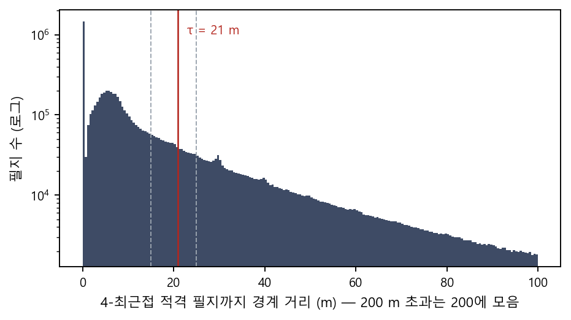
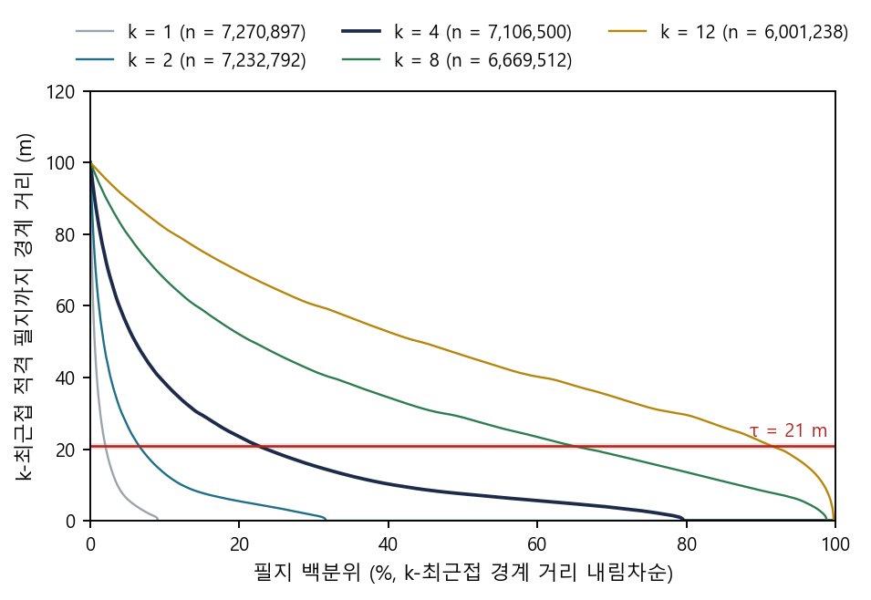
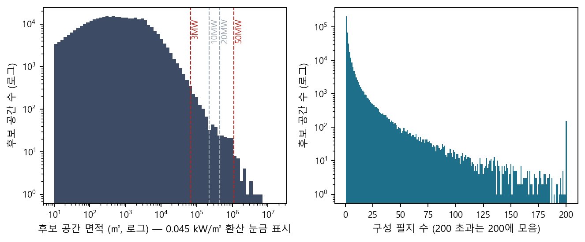
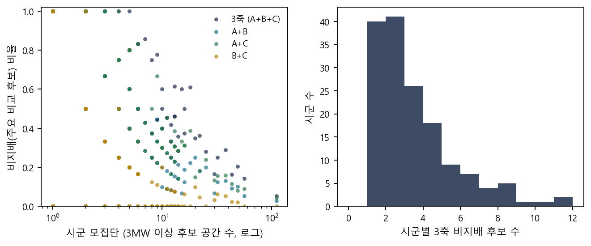
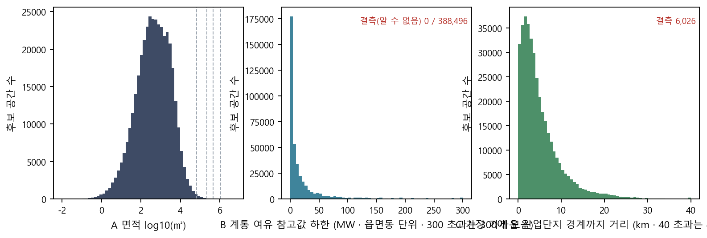
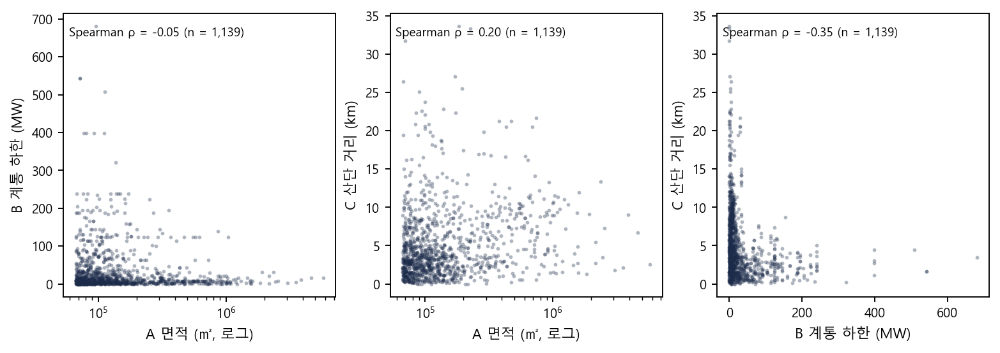
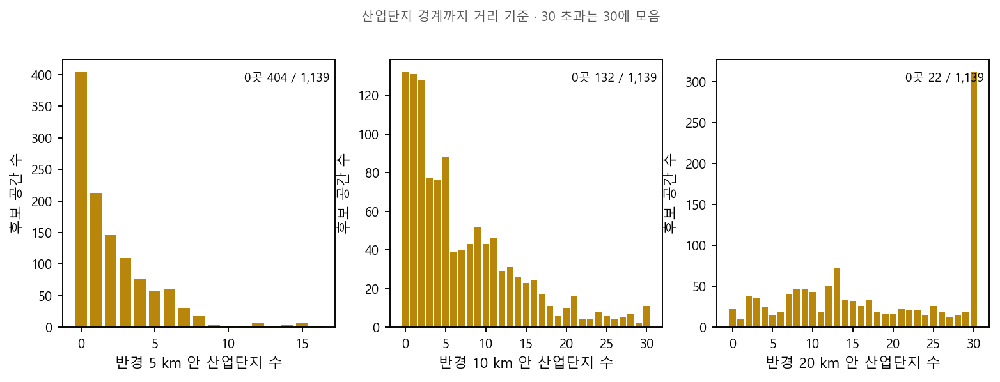
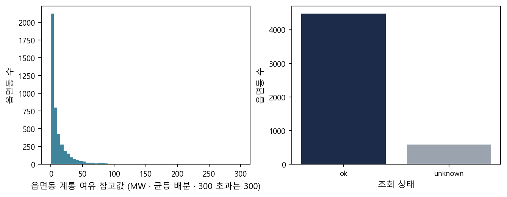

전국 지적 필지 전수를 대상으로, 영농형태양광 특별법(2026-12-17 시행 예정) 시행 전·후에 영농형 태양광을 설치할 수 있는 농지를 필지 단위로 판정하고, 그 결과를 공간 단위로 묶어 지자체·주민이 활용할 수 있는 형태로 공개하는 연구다. 목적은 농업진흥지역에도 설치를 허용했을 때의 효과를 근거로 제시하는 것이다. 분석 대상은 법인·국공유 소유 농지이며 개인 소유 농지는 포함하지 않는다. 결과는 공개 사이트와 보고서·논문으로 발행한다.
판정 조건(필지마다 동일 규칙): 지목(전·답·과수원) · 구조·입지 제외(건축물·수역·산업단지·다른 법의 설치 금지 지역) · 경사 15 초과 제외 · 용도지역 3종 제외(개발제한구역·보전관리지역·보전녹지지역) · 농업진흥지역 여부(시나리오). 자세한 조건은 근거와 방법 3-3.
연접 거리 τ = 21m는 선언 파라미터다. 적격 필지 사이 간격의 분포에는 자연스러운 꺾임이나 골이 없어(3-3), 분포 자체가 특정 값을 가리키지 않는다. 21m는 간격을 만드는 지물의 종류와 폭(3-2)에 근거해 구거·농로·소하천은 건너 묶고 폭 넓은 하천 본류·간선도로·철도는 끊는 수준으로 20m 안팎 범위에서 정한 값이며, k-거리 곡선의 무릎은 이 범위를 확인하는 보조 근거다. 같은 논리는 15–25m 범위를 모두 허용하므로 15/21/25m 민감도(3-4)를 병기한다.
간격을 만드는 지물. 비개인 소유 10MW 이상 구획(코어) 사이 간격이 21–50m인 쌍 197개의 틈에 끼인 필지 1,665개를 실측한 결과, 틈 면적의 59.6 %가 구거, 30.0 %가 도로였다(선형 구조물 합계 93.1 % · 소유는 국유지 90.5 %, 개인 0.6 %). 즉 적격 농지 사이의 간격은 대부분 수로와 농로다.
| 지목 | 필지 | 틈 면적 | 면적 비중 |
|---|---|---|---|
| 구거 | 655 | 159.2 ha | 59.6 % |
| 도로 | 569 | 80.2 ha | 30.0 % |
| 지목 결측 | 138 | 11.2 ha | 4.2 % |
| 하천 | 9 | 5.9 ha | 2.2 % |
| 답 | 108 | 5.0 ha | 1.9 % |
| 제방 | 81 | 2.6 ha | 1.0 % |
원천: 분석보고서 step4_5_buffer_derivation.md §2-9 (코어 간 간격 21–50m 쌍 197개 · 개입 필지 1,665개 · 코어·적격 필지 제외).
지물 폭. 간격을 만드는 지목의 폭(≈ 2 × 면적 ÷ 둘레)을 8개 시군구(당진·서산·김제·고흥·이천·구미·춘천·진주) 표본에서 실측했다. 구거·도로의 중앙값은 3–4m이고 25m를 넘는 것은 1 % 미만이다. 하천은 중앙값 6m이나 4.5 %가 25m를 넘는다(본류).
| 지목 | 표본 필지 | 폭 중앙값 | 10m 초과 | 25m 초과 |
|---|---|---|---|---|
| 하천 | 26,087 | 6.0 m | 24.9 % | 4.5 % |
| 철도용지 | 4,090 | 5.5 m | 26.6 % | 1.1 % |
| 제방 | 9,894 | 5.0 m | 12.0 % | 0.7 % |
| 구거 | 69,697 | 3.9 m | 5.0 % | 0.2 % |
| 도로 | 269,917 | 3.0 m | 7.3 % | 0.9 % |
원천: 분석보고서 step4_1_distance.md §7. 하천·철도용지는 지목이 농지가 아니므로 적격 필지가 아니며, 그 폭이 임계보다 넓으면 양쪽 농지가 자동으로 끊긴다.
해석. 임계를 20m 안팎으로 두면 구거(99.8 %)·도로(99.1 %)·소하천은 건너 묶이고, 폭 25m를 넘는 하천 본류(4.5 %)·간선도로·철도는 끊긴다. 임계를 10m로 낮추면 구거의 5 %·도로의 7 %·하천의 25 %가 끊겨 한 경작지가 수로 하나로 갈라지고, 50m로 높이면 하천 본류까지 대부분 건너 묶여 서로 다른 유역의 농지가 한 단위가 된다. 이 두 끝 사이에서 어느 값이 "사업 부지"의 경계 개념과 맞는지가 자문 문항 M2다.
비접촉 적격 필지의 최근접 간격은 2–4m에서 최고점을 이룬 뒤 단조 감소하는 단봉 분포다(평활 후 추가 봉 0 · p50 7.0m · p75 18.5m · p90 38.9m). 4-최근접 거리의 누적 비율은 아래와 같다.
| 임계 | 0 m (접촉) | 10 m | 15 m | 21 m | 25 m | 50 m |
|---|---|---|---|---|---|---|
| 누적 비율(≤) | 19.9 % | 59.3 % | 69.4 % | 77.5 % | 81.5 % | 94.0 % |

k-거리 곡선(각 필지에서 k번째로 가까운 적격 필지까지 경계 거리, 내림차순)에 Kneedle을 적용하면 무릎이 검출되지만, 그 위치는 k에 비례해 이동한다(k = 1 → 6m, 2 → 10m, 4 → 21.6m, 8 → 44m, 12 → 65m). 따라서 무릎 값은 자료가 가리키는 고유값이 아니라 k 선택의 함수다. k = 4(필지가 네 방향 이웃을 가진다는 격자 배열 가정)에서 S = 2–10 전 구간 20.0–21.6m가 나오며, 이 값이 3-2의 물리적 범위 안에 있다는 점에서 보조 근거로 쓴다.

| k | n | 무릎 (S = 2) | 무릎 백분위 | p25 | p50 | p75 | p95 |
|---|---|---|---|---|---|---|---|
| 1 | 7,270,897 | 6.0 m | 5.0 % | 0 | 0 | 0 | 6.0 |
| 2 | 7,232,792 | 10.0 m | 12.3 % | 0 | 0 | 3.6 | 26.4 |
| 4 | 7,106,500 | 21.6 m | 21.8 % | 2.5 | 7.5 | 18.9 | 54.3 |
| 8 | 6,669,512 | 44.4 m | 27.2 % | 16.1 | 28.9 | 46.6 | 79.9 |
| 12 | 6,001,238 | 65.2 m | 24.4 % | 31.6 | 46.2 | 64.6 | 89.8 |
| τ | 21m 연접 단위 수 | 3MW 이상 | 50MW 이상 | 100MW 이상 | 설치 가능 면적 |
|---|---|---|---|---|---|
| 15 m | 432,271 | 1,087 | 15 | 3 | 1,038.85 km² |
| 21 m | 388,121 | 1,119 | 25 | 8 | 1,038.85 km² |
| 25 m | 369,570 | 1,150 | 38 | 12 | 1,038.85 km² |
조건: 특별법 시행 후(농업진흥구역 설치 가능 · 농업보호구역 제외) · 법인·국공유. 15·25m 행은 2026-09-06 실행값(기하 회수 전). 병합은 면적을 보존하므로 면적은 τ에 무관하고 단위의 수와 큰 단위의 개수만 달라진다. 대규모(50MW 이상) 개수는 15 → 25 → 38로 τ에 민감하다. 관련 문항: M2 · M6.

| 구분 | 단위 수 | 면적 합 | 면적 중앙값 | 구성 필지 수 중앙값 |
|---|---|---|---|---|
| 전체 | 388,121 | 1,038.85 km² | 462 ㎡ | 1 |
| 1MW 이상 (≥ 22,222 ㎡) | 5,648 | 413.78 km² | 35,876 ㎡ | 34 |
| 3MW 이상 (≥ 66,667 ㎡) | 1,119 | 254.44 km² | 109,186 ㎡ | 73 |
| 10MW 이상 | 244 | 161.19 km² | 447,196 ㎡ | 76.5 |
| 20MW 이상 | 122 | 123.09 km² | 743,747 ㎡ | 87 |
| 50MW 이상 | 25 | 54.44 km² | 1,611,404 ㎡ | 179 |
21m 연접(A)을 선행 연구에서 쓰는 다른 원리의 묶음 방법 세 가지(밀도 기반 HDBSCAN* · 그래프 커뮤니티 Leiden · 거리+면적 집적)와 같은 창(시군 필지 + 3 km)·같은 지표로 검토 대상지 10곳에서 비교했다. 방법마다 대표 파라미터 조합을 하나 또는 둘 적용했고, 결과는 10곳 중앙값과 시군별 값으로 제시한다. 채택 판정이 아닌 비교 기준선이다.
| 계열 | 정의 | 자유 파라미터 | 결과 형태 · 특성(정의상 귀결) |
|---|---|---|---|
| A 21m 연접(현행) | 경계 거리 ≤ 21m 단일연결 → 연결성분이 곧 단위 | 1 (τ = 21m · 유도값) | 모든 필지가 정확히 한 단위에 속함 · 규칙을 한 문장으로 쓸 수 있음 |
| B HDBSCAN*(밀도) | 필지 경계 거리 · 상호 도달 거리 · condensed tree · 안정성 절단(필지 수 가중) | min_samples · min_cluster_size(시군별 유도) | 어디에도 속하지 않는 noise 필지가 생김(모든 적격 필지가 어딘가에 속한다는 규약과 충돌) · 큰 단위가 쪼개지기도 함 · 규칙이 시군마다 달라짐 |
| C Leiden 커뮤니티(그래프) | 21m 단위를 노드로 거리 가중 그래프 · 해상도 γ | λ · γ | 결과 단위가 "후보 부지"가 아니라 시군 여러 곳에 걸친 광역 권역 · γ 유도값이 지역마다 달라 단일 규칙이 서지 않음 |
| D 거리 + 면적 집적(씨앗) | 거리 g 안 이웃을 면적 목표에 닿을 때까지 붙임 | g · 목표 면적 | 목표 면적에서 닫히므로 "50MW 몇 곳"이 정의상 결과가 됨 · 목표 눈금 = 숨은 기준값(ADR-0041 위반) |
평가 지표 5축 11지표(가중 합 없이 지표별 우열만): 1 큰 공간 · 2 파편화 · 3 규모 · 4 행정 · 5 안정성 — 정의는 ④탭 M4와 정의서.
값은 10곳 중앙값(시군 관여 기준 · 창 밖으로 이어지는 클러스터는 창에서 잘림)이며, 시군별 값은 아래 접힌 표에 있다. 원천 docs/method_advisory/data/method_comparison_sites.csv · 실행 pr0042/rerun_sites_20261007.py.
| 방법 | 파라미터 | 클러스터 수 | 1필지 비율 | <1MW 면적비 | <3MW 면적비 | ≥20MW 면적비 | 껍질 채움 | 1MW↑ | 3MW↑ | 10MW↑ | 50MW↑ | 체인 | 최대 km² | noise 필지(B) | 50MW 앵커 분할 |
|---|---|---|---|---|---|---|---|---|---|---|---|---|---|---|---|
| A 21m 연접 (현행) | τ=21m | 3,881 | 0.528 | 0.542 | 0.717 | 0.035 | 0.585 | 87 | 22 | 4 | 0 | 0.037 | 0.63 | 0 | 0 |
| B HDBSCAN* (밀도) | k=2, m=1.0×MCS (시군별 유도 99–404) | 4,650 | 0.995 | 0.227 | 0.227 | 0.546 | 0.038 | 26 | 26 | 16 | 3 | 0.155 | 2.27 | 10,752 | 0 |
| C Leiden 커뮤니티 (그래프) | λ=1000m, γ=0.5 | 48 | 0.626 | 0.001 | 0.003 | 0.974 | 0.026 | 16 | 15 | 14 | 8 | 0.199 | 4.60 | 0 | 0 |
| C Leiden 커뮤니티 (그래프) | λ=21m, γ=1.0 | 426 | 0.090 | 0.098 | 0.275 | 0.288 | 0.074 | 120 | 52 | 14 | 0 | 0.066 | 1.15 | 0 | 0 |
| D 거리+면적 집적 (씨앗) | g=200m, D2 목표 222,222㎡ | 809 | 0.358 | 0.133 | 0.251 | 0.032 | 0.148 | 122 | 64 | 28 | 0 | 0.038 | 0.63 | 0 | 0 |
| D 거리+면적 집적 (씨앗) | g=400m, D1 전량 병합 | 132 | 0.503 | 0.008 | 0.016 | 0.971 | 0.084 | 14 | 6 | 3 | 2 | 0.806 | 29.56 | 0 | 0 |
| 방법 | 파라미터 | 클러스터 수 | 1필지 비율 | <1MW 면적비 | <3MW 면적비 | ≥20MW 면적비 | 껍질 채움 | 1MW↑ | 3MW↑ | 10MW↑ | 50MW↑ | 체인 | 최대 km² | noise 필지(B) | 50MW 앵커 분할 |
|---|---|---|---|---|---|---|---|---|---|---|---|---|---|---|---|
| A | τ=21m | 4,129 | 0.527 | 0.260 | 0.340 | 0.525 | 0.640 | 124 | 43 | 14 | 4 | 0.165 | 5.79 | 0 | 0 |
| B | k=2, m=1.0×MCS (시군별 유도 99–404) | 4,862 | 0.995 | 0.132 | 0.134 | 0.806 | 0.033 | 27 | 25 | 17 | 3 | 0.228 | 8.30 | 11,014 | 0 |
| C | λ=1000m, γ=0.5 | 34 | 0.500 | 0.001 | 0.001 | 0.992 | 0.026 | 15 | 14 | 14 | 9 | 0.223 | 9.07 | 0 | 0 |
| C | λ=21m, γ=1.0 | 508 | 0.039 | 0.067 | 0.150 | 0.625 | 0.074 | 133 | 56 | 16 | 3 | 0.215 | 7.67 | 0 | 0 |
| D | g=200m, D2 목표 222,222㎡ | 1,027 | 0.317 | 0.091 | 0.178 | 0.517 | 0.216 | 153 | 70 | 31 | 4 | 0.162 | 5.79 | 0 | 0 |
| D | g=400m, D1 전량 병합 | 148 | 0.351 | 0.008 | 0.017 | 0.966 | 0.098 | 18 | 6 | 4 | 2 | 0.822 | 40.09 | 0 | 0 |
| 방법 | 파라미터 | 클러스터 수 | 1필지 비율 | <1MW 면적비 | <3MW 면적비 | ≥20MW 면적비 | 껍질 채움 | 1MW↑ | 3MW↑ | 10MW↑ | 50MW↑ | 체인 | 최대 km² | noise 필지(B) | 50MW 앵커 분할 |
|---|---|---|---|---|---|---|---|---|---|---|---|---|---|---|---|
| A | τ=21m | 4,154 | 0.538 | 0.142 | 0.186 | 0.608 | 0.598 | 185 | 111 | 77 | 5 | 0.040 | 2.55 | 0 | 0 |
| B | k=2, m=1.0×MCS (시군별 유도 99–404) | 4,339 | 0.986 | 0.108 | 0.125 | 0.809 | 0.042 | 83 | 53 | 30 | 15 | 0.166 | 10.79 | 7,873 | 0 |
| C | λ=1000m, γ=0.5 | 39 | 0.128 | 0.001 | 0.003 | 0.967 | 0.021 | 26 | 22 | 19 | 6 | 0.363 | 24.10 | 0 | 0 |
| C | λ=21m, γ=1.0 | 525 | 0.023 | 0.041 | 0.092 | 0.818 | 0.085 | 143 | 56 | 16 | 10 | 0.167 | 10.83 | 0 | 0 |
| D | g=200m, D2 목표 222,222㎡ | 1,073 | 0.311 | 0.053 | 0.104 | 0.607 | 0.251 | 223 | 140 | 92 | 5 | 0.040 | 2.55 | 0 | 0 |
| D | g=400m, D1 전량 병합 | 243 | 0.342 | 0.011 | 0.018 | 0.930 | 0.125 | 47 | 32 | 8 | 2 | 0.806 | 60.59 | 0 | 0 |
| 방법 | 파라미터 | 클러스터 수 | 1필지 비율 | <1MW 면적비 | <3MW 면적비 | ≥20MW 면적비 | 껍질 채움 | 1MW↑ | 3MW↑ | 10MW↑ | 50MW↑ | 체인 | 최대 km² | noise 필지(B) | 50MW 앵커 분할 |
|---|---|---|---|---|---|---|---|---|---|---|---|---|---|---|---|
| A | τ=21m | 3,079 | 0.530 | 0.463 | 0.599 | 0.248 | 0.579 | 65 | 16 | 6 | 1 | 0.096 | 1.19 | 0 | 0 |
| B | k=2, m=1.0×MCS (시군별 유도 99–404) | 4,438 | 0.996 | 0.169 | 0.171 | 0.673 | 0.041 | 20 | 19 | 11 | 2 | 0.393 | 6.84 | 8,301 | 1 |
| C | λ=1000m, γ=0.5 | 78 | 0.641 | 0.004 | 0.006 | 0.919 | 0.028 | 19 | 18 | 13 | 7 | 0.223 | 4.96 | 0 | 0 |
| C | λ=21m, γ=1.0 | 394 | 0.140 | 0.091 | 0.225 | 0.528 | 0.068 | 92 | 36 | 7 | 3 | 0.268 | 4.65 | 0 | 0 |
| D | g=200m, D2 목표 222,222㎡ | 662 | 0.376 | 0.130 | 0.223 | 0.237 | 0.134 | 78 | 46 | 18 | 1 | 0.092 | 1.19 | 0 | 0 |
| D | g=400m, D1 전량 병합 | 155 | 0.497 | 0.025 | 0.039 | 0.894 | 0.071 | 16 | 9 | 4 | 2 | 0.485 | 9.32 | 0 | 0 |
| 방법 | 파라미터 | 클러스터 수 | 1필지 비율 | <1MW 면적비 | <3MW 면적비 | ≥20MW 면적비 | 껍질 채움 | 1MW↑ | 3MW↑ | 10MW↑ | 50MW↑ | 체인 | 최대 km² | noise 필지(B) | 50MW 앵커 분할 |
|---|---|---|---|---|---|---|---|---|---|---|---|---|---|---|---|
| A | τ=21m | 4,201 | 0.474 | 0.412 | 0.636 | 0.040 | 0.587 | 157 | 49 | 5 | 0 | 0.040 | 0.72 | 0 | 0 |
| B | k=2, m=1.0×MCS (시군별 유도 99–404) | 6,872 | 0.995 | 0.217 | 0.217 | 0.551 | 0.046 | 34 | 34 | 26 | 3 | 0.114 | 2.46 | 14,094 | 0 |
| C | λ=1000m, γ=0.5 | 96 | 0.833 | 0.001 | 0.001 | 0.981 | 0.033 | 16 | 16 | 15 | 10 | 0.153 | 4.24 | 0 | 0 |
| C | λ=21m, γ=1.0 | 402 | 0.202 | 0.076 | 0.183 | 0.364 | 0.067 | 116 | 61 | 24 | 0 | 0.052 | 1.02 | 0 | 0 |
| D | g=200m, D2 목표 222,222㎡ | 773 | 0.362 | 0.085 | 0.161 | 0.036 | 0.143 | 122 | 81 | 48 | 0 | 0.036 | 0.72 | 0 | 0 |
| D | g=400m, D1 전량 병합 | 103 | 0.854 | 0.002 | 0.004 | 0.996 | 0.120 | 2 | 1 | 1 | 1 | 0.996 | 34.73 | 0 | 0 |
| 방법 | 파라미터 | 클러스터 수 | 1필지 비율 | <1MW 면적비 | <3MW 면적비 | ≥20MW 면적비 | 껍질 채움 | 1MW↑ | 3MW↑ | 10MW↑ | 50MW↑ | 체인 | 최대 km² | noise 필지(B) | 50MW 앵커 분할 |
|---|---|---|---|---|---|---|---|---|---|---|---|---|---|---|---|
| A | τ=21m | 5,227 | 0.552 | 0.621 | 0.798 | 0.030 | 0.608 | 110 | 25 | 4 | 0 | 0.030 | 0.53 | 0 | 0 |
| B | k=2, m=1.0×MCS (시군별 유도 99–404) | 9,560 | 0.997 | 0.351 | 0.354 | 0.411 | 0.049 | 33 | 31 | 24 | 2 | 0.080 | 1.73 | 13,004 | 0 |
| C | λ=1000m, γ=0.5 | 221 | 0.923 | 0.003 | 0.004 | 0.981 | 0.028 | 17 | 16 | 15 | 10 | 0.202 | 5.04 | 0 | 0 |
| C | λ=21m, γ=1.0 | 625 | 0.326 | 0.099 | 0.292 | 0.212 | 0.076 | 176 | 72 | 18 | 1 | 0.065 | 1.27 | 0 | 0 |
| D | g=200m, D2 목표 222,222㎡ | 1,088 | 0.477 | 0.132 | 0.229 | 0.027 | 0.123 | 134 | 81 | 46 | 0 | 0.027 | 0.53 | 0 | 0 |
| D | g=400m, D1 전량 병합 | 240 | 0.892 | 0.005 | 0.010 | 0.975 | 0.070 | 7 | 3 | 2 | 1 | 0.975 | 29.41 | 0 | 0 |
| 방법 | 파라미터 | 클러스터 수 | 1필지 비율 | <1MW 면적비 | <3MW 면적비 | ≥20MW 면적비 | 껍질 채움 | 1MW↑ | 3MW↑ | 10MW↑ | 50MW↑ | 체인 | 최대 km² | noise 필지(B) | 50MW 앵커 분할 |
|---|---|---|---|---|---|---|---|---|---|---|---|---|---|---|---|
| A | τ=21m | 3,404 | 0.552 | 0.424 | 0.529 | 0.266 | 0.564 | 82 | 30 | 11 | 0 | 0.060 | 1.05 | 0 | 0 |
| B | k=2, m=1.0×MCS (시군별 유도 99–404) | 3,798 | 0.993 | 0.307 | 0.307 | 0.518 | 0.031 | 26 | 26 | 14 | 3 | 0.146 | 2.85 | 10,491 | 0 |
| C | λ=1000m, γ=0.5 | 54 | 0.611 | 0.001 | 0.001 | 0.956 | 0.026 | 17 | 17 | 15 | 8 | 0.334 | 10.50 | 0 | 0 |
| C | λ=21m, γ=1.0 | 398 | 0.085 | 0.098 | 0.259 | 0.467 | 0.076 | 125 | 45 | 15 | 3 | 0.151 | 2.86 | 0 | 0 |
| D | g=200m, D2 목표 222,222㎡ | 788 | 0.367 | 0.134 | 0.274 | 0.262 | 0.165 | 123 | 59 | 27 | 0 | 0.059 | 1.05 | 0 | 0 |
| D | g=400m, D1 전량 병합 | 108 | 0.509 | 0.004 | 0.011 | 0.979 | 0.101 | 16 | 8 | 2 | 1 | 0.961 | 50.38 | 0 | 0 |
| 방법 | 파라미터 | 클러스터 수 | 1필지 비율 | <1MW 면적비 | <3MW 면적비 | ≥20MW 면적비 | 껍질 채움 | 1MW↑ | 3MW↑ | 10MW↑ | 50MW↑ | 체인 | 최대 km² | noise 필지(B) | 50MW 앵커 분할 |
|---|---|---|---|---|---|---|---|---|---|---|---|---|---|---|---|
| A | τ=21m | 4,444 | 0.549 | 0.685 | 0.851 | 0.000 | 0.646 | 92 | 20 | 2 | 0 | 0.018 | 0.28 | 0 | 0 |
| B | k=2, m=1.0×MCS (시군별 유도 99–404) | 5,732 | 0.995 | 0.276 | 0.279 | 0.540 | 0.044 | 29 | 28 | 20 | 3 | 0.104 | 2.08 | 12,029 | 0 |
| C | λ=1000m, γ=0.5 | 19 | 0.316 | 0.000 | 0.000 | 1.000 | 0.028 | 13 | 13 | 13 | 10 | 0.154 | 4.08 | 0 | 0 |
| C | λ=21m, γ=1.0 | 451 | 0.013 | 0.128 | 0.356 | 0.126 | 0.092 | 173 | 65 | 13 | 0 | 0.051 | 0.89 | 0 | 0 |
| D | g=200m, D2 목표 222,222㎡ | 830 | 0.289 | 0.169 | 0.309 | 0.000 | 0.168 | 143 | 74 | 28 | 0 | 0.016 | 0.29 | 0 | 0 |
| D | g=400m, D1 전량 병합 | 36 | 0.417 | 0.003 | 0.004 | 0.996 | 0.130 | 5 | 3 | 3 | 2 | 0.777 | 29.16 | 0 | 0 |
| 방법 | 파라미터 | 클러스터 수 | 1필지 비율 | <1MW 면적비 | <3MW 면적비 | ≥20MW 면적비 | 껍질 채움 | 1MW↑ | 3MW↑ | 10MW↑ | 50MW↑ | 체인 | 최대 km² | noise 필지(B) | 50MW 앵커 분할 |
|---|---|---|---|---|---|---|---|---|---|---|---|---|---|---|---|
| A | τ=21m | 2,258 | 0.512 | 0.647 | 0.895 | 0.000 | 0.553 | 43 | 6 | 0 | 0 | 0.034 | 0.19 | 0 | 0 |
| B | k=2, m=1.0×MCS (시군별 유도 99–404) | 2,404 | 0.996 | 0.236 | 0.236 | 0.495 | 0.031 | 10 | 10 | 8 | 1 | 0.199 | 1.24 | 5,660 | 0 |
| C | λ=1000m, γ=0.5 | 24 | 0.375 | 0.002 | 0.002 | 0.678 | 0.023 | 14 | 14 | 12 | 1 | 0.172 | 1.15 | 0 | 0 |
| C | λ=21m, γ=1.0 | 253 | 0.036 | 0.214 | 0.536 | 0.000 | 0.071 | 69 | 20 | 3 | 0 | 0.048 | 0.28 | 0 | 0 |
| D | g=200m, D2 목표 222,222㎡ | 376 | 0.311 | 0.179 | 0.373 | 0.000 | 0.100 | 49 | 21 | 11 | 0 | 0.041 | 0.24 | 0 | 0 |
| D | g=400m, D1 전량 병합 | 46 | 0.326 | 0.018 | 0.068 | 0.836 | 0.049 | 12 | 5 | 3 | 2 | 0.582 | 3.96 | 0 | 0 |
| 방법 | 파라미터 | 클러스터 수 | 1필지 비율 | <1MW 면적비 | <3MW 면적비 | ≥20MW 면적비 | 껍질 채움 | 1MW↑ | 3MW↑ | 10MW↑ | 50MW↑ | 체인 | 최대 km² | noise 필지(B) | 50MW 앵커 분할 |
|---|---|---|---|---|---|---|---|---|---|---|---|---|---|---|---|
| A | τ=21m | 3,633 | 0.484 | 0.706 | 0.868 | 0.000 | 0.570 | 68 | 13 | 0 | 0 | 0.018 | 0.19 | 0 | 0 |
| B | k=2, m=1.0×MCS (시군별 유도 99–404) | 5,820 | 0.997 | 0.306 | 0.310 | 0.510 | 0.035 | 22 | 20 | 15 | 1 | 0.119 | 1.65 | 24,158 | 0 |
| C | λ=1000m, γ=0.5 | 41 | 0.683 | 0.001 | 0.007 | 0.993 | 0.025 | 12 | 10 | 10 | 7 | 0.196 | 4.11 | 0 | 0 |
| C | λ=21m, γ=1.0 | 328 | 0.095 | 0.126 | 0.316 | 0.112 | 0.069 | 106 | 48 | 10 | 0 | 0.067 | 0.80 | 0 | 0 |
| D | g=200m, D2 목표 222,222㎡ | 714 | 0.354 | 0.153 | 0.326 | 0.000 | 0.152 | 92 | 43 | 24 | 0 | 0.026 | 0.30 | 0 | 0 |
| D | g=400m, D1 전량 병합 | 115 | 0.539 | 0.008 | 0.015 | 0.975 | 0.066 | 13 | 6 | 3 | 2 | 0.805 | 29.72 | 0 | 0 |
| 방법 | 파라미터 | 클러스터 수 | 1필지 비율 | <1MW 면적비 | <3MW 면적비 | ≥20MW 면적비 | 껍질 채움 | 1MW↑ | 3MW↑ | 10MW↑ | 50MW↑ | 체인 | 최대 km² | noise 필지(B) | 50MW 앵커 분할 |
|---|---|---|---|---|---|---|---|---|---|---|---|---|---|---|---|
| A | τ=21m | 3,589 | 0.524 | 0.759 | 0.952 | 0.000 | 0.582 | 44 | 4 | 0 | 0 | 0.017 | 0.12 | 0 | 0 |
| B | k=2, m=1.0×MCS (시군별 유도 99–404) | 2,766 | 0.994 | 0.115 | 0.115 | 0.636 | 0.020 | 16 | 16 | 11 | 4 | 0.164 | 1.89 | 6,159 | 0 |
| C | λ=1000m, γ=0.5 | 289 | 0.948 | 0.008 | 0.014 | 0.876 | 0.013 | 15 | 14 | 13 | 3 | 0.184 | 1.89 | 0 | 0 |
| C | λ=21m, γ=1.0 | 602 | 0.457 | 0.227 | 0.581 | 0.000 | 0.075 | 97 | 27 | 3 | 0 | 0.034 | 0.27 | 0 | 0 |
| D | g=200m, D2 목표 222,222㎡ | 833 | 0.562 | 0.195 | 0.333 | 0.000 | 0.138 | 62 | 34 | 11 | 0 | 0.030 | 0.24 | 0 | 0 |
| D | g=400m, D1 전량 병합 | 341 | 0.856 | 0.022 | 0.043 | 0.916 | 0.062 | 14 | 8 | 4 | 3 | 0.549 | 6.71 | 0 | 0 |
관련 문항: M4 · M3.
지자체·현장 관계자에게 "공동 1등(비지배 집합)" 제시 방식을 보여 준 결과: 집합 안의 순서(1·2·3위)에는 큰 의미를 두지 않았고, 자신이 고른 축을 중심으로 보든 모든 축을 다 보든 가중치 없이 비지배로 추리는 것이 전문가 설문으로 가중치를 만들어 순위를 매기던 방식보다 더 객관적이라고 받아들였다. 관련 문항: M5. 실제 화면은 우리 동네 TOP 10.
비지배는 같은 모집단 안의 쌍별 비교이므로 모집단이 작을수록 거의 전부가 남는다. 후보가 1개뿐인 시군에서는 그 후보가 정의상 비지배다.

| 모집단(3MW 이상) | 시군 수 | 후보 합 | 3축 비지배 합 | 비율(합산) | 비율(시군 중앙값) |
|---|---|---|---|---|---|
| 1 | 26 | 26 | 26 | 1.00 | 1.00 |
| 2–4 | 58 | 159 | 117 | 0.74 | 0.75 |
| 5–9 | 37 | 236 | 127 | 0.54 | 0.50 |
| 10–19 | 23 | 292 | 121 | 0.41 | 0.40 |
| 20–49 | 8 | 259 | 63 | 0.24 | 0.27 |
| 50 이상 | 2 | 167 | 14 | 0.08 | 0.10 |
표기 규약: 비지배 수는 항상 모집단 수와 함께 적고, 모집단 1개는 "단독(비교 대상 없음)"으로 배지를 쓰지 않는다. 관련 문항: M5.
3MW 이상 후보 공간(시군 touch 기준 1,139행, 시행 후 조건)과 그 입력 자료의 분포다. 축 추가·대체 검토의 참고 자료다.

| 축 | p5 | p25 | p50 | p75 | p95 | 비고 |
|---|---|---|---|---|---|---|
| A 면적 ㎡ (전량) | 12 | 111 | 463 | 1,918 | 9,086 | 3MW(66,667㎡) 이상은 전체의 0.3 %(1,119곳) |
| B 계통 하한 MW | 0.0 | 1.4 | 6.4 | 21.4 | 102.4 | 읍면동 값이라 같은 읍면동 후보는 동일값 · 0 = 포화 |
| C 산단 거리 km | 0.40 | 1.83 | 3.72 | 6.85 | 14.99 | 산업단지 1,363곳(일반 763 · 농공 483 · 국가 65 · 도시첨단 52) 경계 기준 |

| 쌍 | Spearman ρ | 읽기 |
|---|---|---|
| 면적 – 계통 하한 | −0.05 | 거의 무관 |
| 면적 – 산단 거리 | +0.20 | 큰 후보일수록 산단에서 약간 멀다(간척지 효과) |
| 계통 하한 – 산단 거리 | −0.35 | 산단 가까운 곳의 계통 여유가 큰 경향 — 두 축이 부분적으로 겹침 |
관련 문항: M5(나).

| 반경 | p25 | p50 | p75 | p95 | 0곳인 후보 |
|---|---|---|---|---|---|
| 5 km | 0 | 1 | 3 | 7 | 404 / 1,139 |
| 10 km | 2 | 5 | 11 | 21 | 132 / 1,139 |
| 20 km | 9 | 16 | 31 | 64 | 22 / 1,139 |
"가장 가까운 산단까지 거리" 대신 "반경 안 산단 수(또는 유형 가중 합)"를 쓰는 안은 화면의 보조 탐색 도구로만 있었고 정본 축으로 승격하지 않았다(반경이 또 하나의 자유 파라미터이기 때문이다). 현재 비교 축이 아니다. 관련 문항: M5(나).

| 표기 | 뜻 | 쓰지 않는 말 |
|---|---|---|
| 후보 공간 | 판정 통과 필지를 21m 이내 연접으로 묶은 최소 공간 분석 단위 | 클러스터 · 블록 · 구획(화면) |
| 최종 클러스터 | 사업 단위로서의 묶음 — 정의 미정 | — |
| 주요 비교 후보 | 고른 축의 비지배 집합(공동 1등) | 추천 · 1위 · 점수 |
| 규모 눈금 | 3 / 10 / 20 / 50 MW = 면적 × 0.045 kW/㎡ 환산 구분(표시용) | 설치 용량 · 법정 기준 |
| 특구 | 법률 용어(재생에너지지구 등)에 한정 | 후보 공간의 별칭으로 사용 금지 |
| 단일연결 절단 | 거리 h에서 자른 단일연결 = 거리 h 그래프의 연결성분(학술적으로 정확) | regionalization(동질성 최적화를 하지 않으므로 부정확) |